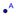
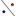

Con el ratón o mouse[1], empleando las herramientas de construcción
disponibles en la Barra de
Herramientas, pueden realizarse construcciones geométricas en
Basta con elegir alguna
herramienta de construcción de la Barra
de Herramientas y seguir las indicaciones de la Ayuda de la Barra de Herramientas (a
continuación de la barra de herramientas) para averiguar cómo usarla.
Atención: Si el nombre de la herramienta y/o la explicación de su empleo fueran
demasiado extensos, sólo aparecerá en el extremo derecho de la Barra, el nombre en cuestión. La
explicación de su empleo, se podrá leer en el cuadrito emergente al pasar con
el ratón o mouse por encima de la
herramienta activa.
Todo objeto creado
en
Atención: Se pueden desplazar objetos en
Cada ícono de la
barra, representa una caja de herramientas que contiene una selección
de útiles similares, que se despliegan con un clic sobre la flechita del vértice inferior derecho del recuadro
del ícono.
Ojo: Las herramientas se organizan según la
índole de objeto resultante. A la Caja de
Herramientas de Puntos (el ícono por
omisión es ) se recurre para diversas creaciones de diferentes
puntos y las que aplican transformaciones geométricas se agrupan en la Caja de
Herramienta de Transformación (su ícono por omisión es ).